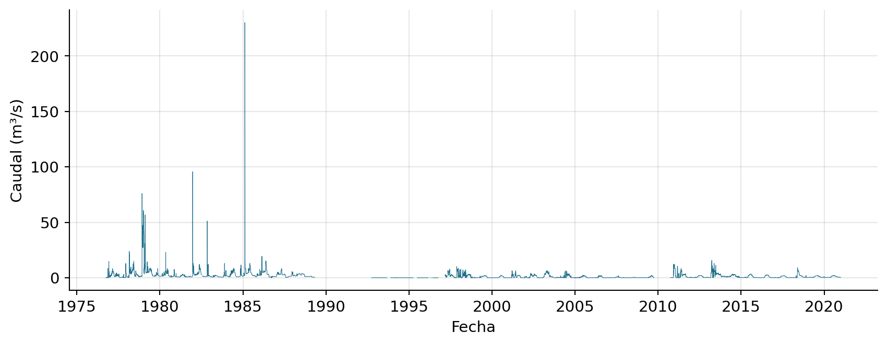
Curso de Series Temporales con Python
mayo 2026
Curso de 4 sesiones (5 h cada una) centrado en series temporales en Python.
Dataset común:
PZ0267014 (CHD, 1985–2024).Una serie temporal es una secuencia de observaciones ordenadas en el tiempo:
\[ \{y_t\}_{t=1}^{T},\qquad t \in \mathbb{N} \]
En hidrología típicamente:
Lo que las hace especiales: las observaciones no son independientes.

Se observan: estacionalidad anual, eventos extremos, gaps.
Frecuencias que veremos: horaria (SAIH), diaria (aforos, base del curso), mensual (piezometría), irregular (manantiales).
Problemas que aborda el curso:
Con datos i.i.d.: dividir aleatoriamente 80/20 es válido. Con series:
Regla: train/val/test respetando la secuencia temporal (X[:t1], X[t1:t2], X[t2:]). Para validación cruzada usamos: walk-forward o expanding window (sesión 3).
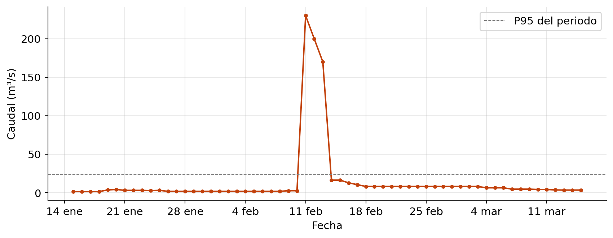
Pico de 230 m³/s el 11 de febrero. Predecir este tipo de eventos únicamente con los valores de la series temporal es complejo.
Un evento de lluvia produce una respuesta de caudal con forma característica:
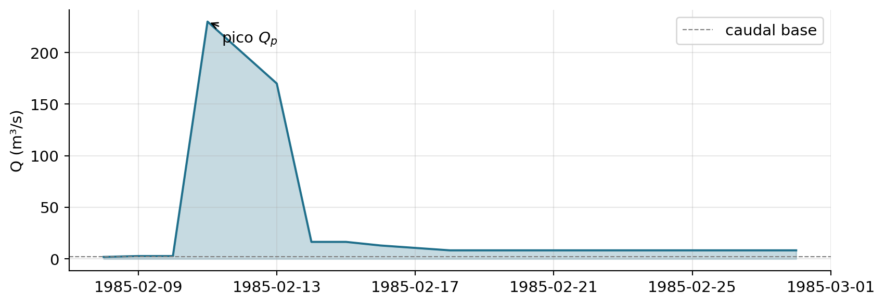
Mensaje: modelar bien series hidrológicas exige conocer mínimamente la física del proceso, no sólo la estadística.
Una serie se puede escribir como suma (modelo aditivo):
\[ y_t = T_t + S_t + C_t + \varepsilon_t \]
O multiplicativo: \(y_t = T_t \cdot S_t \cdot \varepsilon_t\) (varianza crece con el nivel).
| Estacional (\(S_t\)) | Cíclico (\(C_t\)) | |
|---|---|---|
| Periodo | Fijo y conocido | Variable, desconocido |
| Duración típica | \(\le\) 1 año | \(\ge\) 2 años |
| Magnitud | Relativamente estable | Muy variable |
| Predictibilidad de picos | Alta (sabes cuándo) | Baja a largo plazo |
En hidrología:
STL captura \(S\), no \(C\): confundirlos y pasar
period=Nte devuelve una estacionalidad espuria.
Aditivo
Multiplicativo
En la práctica: si dudas, prueba ambos y compara residuos.
Antes de descomponer formalmente, una visualización rápida: una caja por mes del año.
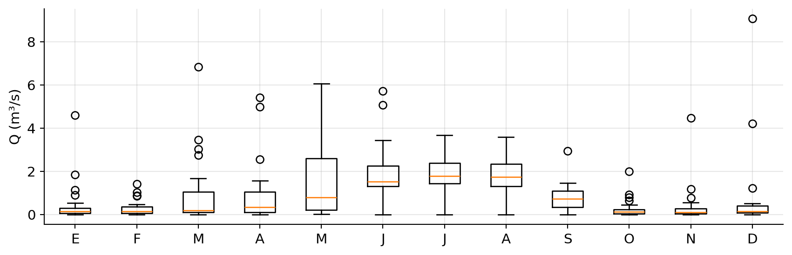
Revela de un vistazo: forma del ciclo (pico may-ago por deshielo de Sierra Nevada, estiaje en otoño), amplitud de la estacionalidad y si la varianza crece con el nivel ⇒ pista de patrón multiplicativo.
La componente \(\varepsilon_t\) de la descomposición tiene nombre propio. Una secuencia \(\{\varepsilon_t\}\) es ruido blanco si:
\[ \mathbb{E}[\varepsilon_t] = 0, \quad \mathrm{Var}(\varepsilon_t) = \sigma^2, \quad \mathrm{Cov}(\varepsilon_t, \varepsilon_s) = 0 \;\; \forall t \neq s \]
Es estacionario por construcción y no tiene memoria: el pasado no informa del futuro.
¿Por qué es la referencia?
Intuición: una serie es estacionaria tiene la misma media, misma variabilidad y misma forma de oscilar a lo largo del tiempo.
Formal (estricta): la distribución conjunta de \((y_{t_1}, ..., y_{t_k})\) es invariante a traslaciones temporales.
Más práctico: estacionariedad débil (covarianza-estacionariedad):
¿Por qué importa? Casi todos los modelos clásicos (ARMA, ARIMA) asumen que la serie es estacionaria — al menos tras transformarla.
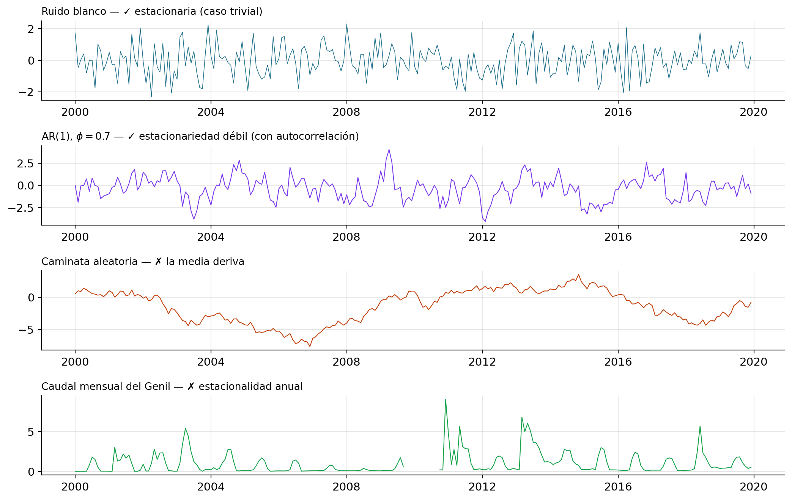
Regla rápida (visual): si la media o la amplitud parecen depender del tiempo (deriva, estacionalidad, varianza creciente), no es estacionaria. Si solo hay rachas alrededor de un nivel constante, sí lo es.
Dos tests complementarios:
from statsmodels.tsa.stattools import adfuller, kpss
serie = CAUDAL.loc["2000":"2020"].dropna()
adf_p = adfuller(serie)[1]
kpss_p = kpss(serie, regression="c", nlags="auto")[1]
print(f"ADF p-valor : {adf_p:.4f} (rechaza H0 ⇒ estacionaria)")
print(f"KPSS p-valor: {kpss_p:.4f} (rechaza H0 ⇒ NO estacionaria)")ADF p-valor : 0.0000 (rechaza H0 ⇒ estacionaria)
KPSS p-valor: 0.1000 (rechaza H0 ⇒ NO estacionaria)Buena práctica: correr los dos. Conclusiones contradictorias ⇒ revisar tendencia y estacionalidad.
Dos formas distintas de “no ser estacionaria”, con remedios opuestos:
Confundirlos lleva al modelo equivocado. ADF y KPSS combinados los distinguen:
| ADF rechaza? | KPSS rechaza? | Conclusión |
|---|---|---|
| Sí | No | Estacionaria ✓ |
| No | Sí | Raíz unitaria ⇒ diferenciar |
| Sí | Sí | Trend-stationary ⇒ quitar tendencia (no diferenciar) |
| No | No | Inconcluso ⇒ ampliar muestra / inspección visual |
Tres opciones clásicas:
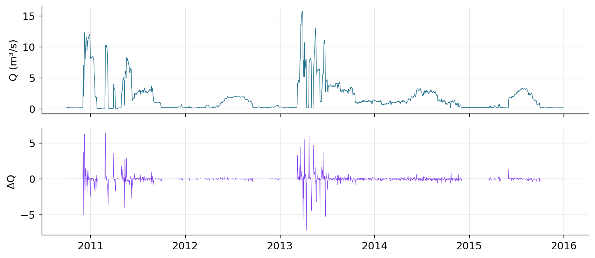
Familia paramétrica que engloba log y otras potencias:
\[ y^{(\lambda)} = \begin{cases} \dfrac{y^{\lambda} - 1}{\lambda}, & \lambda \neq 0 \\[4pt] \log y, & \lambda = 0 \end{cases} \]
\(\lambda\) se estima automáticamente maximizando la verosimilitud: - \(\lambda = 1\) → identidad. - \(\lambda = 0.5\) → raíz (intermedia). - \(\lambda = 0\) → logaritmo (estabiliza varianza proporcional). - \(\lambda < 0\) → inversa, compresión fuerte.
λ óptimo (MLE): -0.046Requiere \(y > 0\). Si la serie tiene 0 (ríos efímeros) → usar Yeo-Johnson.
Box-Cox necesita \(y > 0\). Yeo-Johnson (2000) extiende la idea a \(y \in \mathbb{R}\) tratando las partes positiva y negativa por separado:
\[ \psi(\lambda, y) = \begin{cases} \dfrac{(y+1)^\lambda - 1}{\lambda}, & y \ge 0 \\[6pt] -\dfrac{(-y+1)^{2-\lambda} - 1}{2-\lambda}, & y < 0 \end{cases} \]
STL = Seasonal-Trend decomposition using LOESS. Cleveland et al. (1990).
seasonal_decompose).LOESS (LOcally Estimated Scatterplot Smoothing, Cleveland 1979) = regresión local no paramétrica.
Idea: para cada \(x_i\), ajusta un polinomio pequeño (lineal o cuadrático) usando solo los vecinos cercanos (ancho ventana, frac), ponderados por distancia.
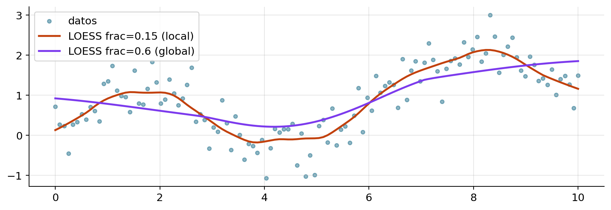
seasonal_decompose clásicoseasonal_decompose es la función de statsmodels que implementa el método clásico (medias móviles, Persons 1919). Misma API que STL, otro algoritmo:
Clásico (seasonal_decompose) |
STL | |
|---|---|---|
| Suavizado de tendencia | Media móvil de tamaño period |
LOESS |
| Estacionalidad | Fija (misma todos los años) | Evoluciona (ventana ajustable) |
| Outliers | Sensible | Robusto (robust=True) |
| Aditiva / multiplicativa | Ambas (model="additive"/"multiplicative") |
Solo aditiva (aplicar log si hace falta) |
| Bordes de la serie | Pierde period/2 valores |
Cubre toda la serie |
| Cuándo usarla | Baseline rápido, didáctico | Análisis serio / producción |
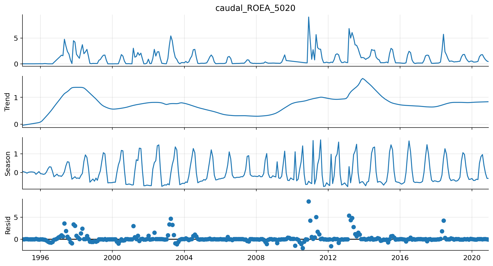
period: longitud del ciclo en número de observaciones (depende de la frecuencia de la serie).seasonal: ventana LOESS de estacionalidad (impar, ≥ 7). Pequeño → cambia rápido; grande → rígida.trend: ventana de tendencia (por defecto \(\approx 1.5 \cdot\)period).robust=True: descuenta outliers → por defecto en hidrología.Reglas prácticas: empieza siempre con robust=True y seasonal=13; si el panel seasonal captura picos puntuales → seasonal mayor; si la tendencia “sigue” eventos extremos → trend mayor.
Lo que buscamos en cada panel:
Si el residuo no es ruido blanco ⇒ STL no es suficiente; queda estructura que un modelo puede capturar.
¿Qué fracción de la varianza explica cada componente? (Hyndman & Athanasopoulos, 2021):
\[ F_T = \max\!\left(0,\; 1 - \frac{\mathrm{Var}(R_t)}{\mathrm{Var}(T_t + R_t)}\right), \qquad F_S = \max\!\left(0,\; 1 - \frac{\mathrm{Var}(R_t)}{\mathrm{Var}(S_t + R_t)}\right) \]
Valores en \([0, 1]\): 0 = componente ausente, 1 = la componente lo explica todo. Útil para comparar series o periodos (¿se atenúa la estacionalidad del Genil tras décadas de regulación?).
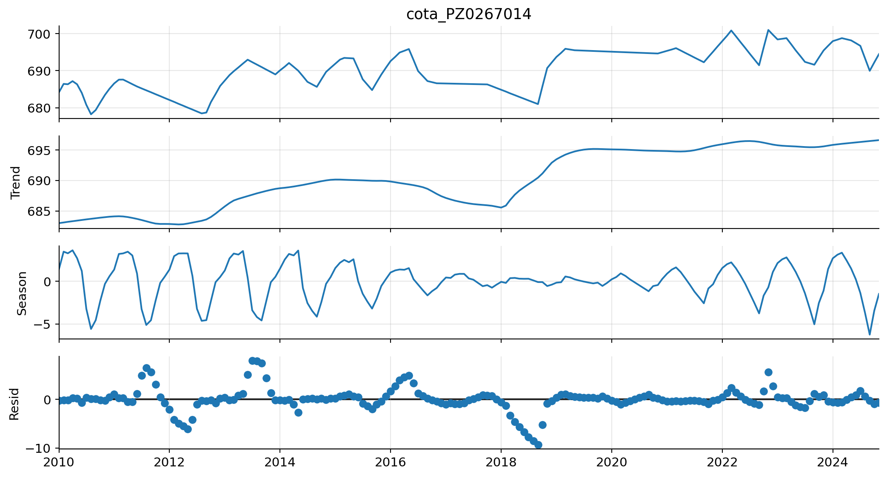
Mismo método, dos regímenes muy distintos:
serie F_T F_S
Caudal Genil (Q) 0.20 0.21
Piezometría (h) 0.80 0.26Implicación: la primera lectura de un STL debería ser “¿qué pesa más, qué queda fuera?”. En piezometría los residuos aún tienen autocorrelación → motiva los modelos de Pastas en sesión 2.
Series sub-diarias o diarias suelen tener varios ciclos solapados:
STL clásico admite un único periodo. La extensión MSTL (Bandara, Hyndman & Bergmeir, 2021) ajusta varios periodos secuencialmente, de menor a mayor:
En este curso usaremos STL con un periodo, pero conviene saber que existe — e ignorar una estacionalidad real suele dejar estructura visible en la ACF de los residuos.
La función de autocorrelación mide la correlación entre \(y_t\) e \(y_{t-k}\):
\[ \rho(k) = \frac{\mathrm{Cov}(y_t, y_{t-k})}{\mathrm{Var}(y_t)} \]
Cómo se interpreta la ACF según el tipo de serie:
Bajo la hipótesis de ruido blanco, la ACF muestral \(\hat{\rho}(k)\) tiene distribución asintótica:
\[ \hat{\rho}(k) \overset{d}{\sim} \mathcal{N}\!\left(0,\; \frac{1}{T}\right), \quad k \neq 0 \]
donde \(T\) es la longitud de la serie.
Por tanto el 95% de los \(\hat{\rho}(k)\) caen dentro de \(\pm 1.96/\sqrt{T}\): son los valores críticos.
Las bandas azules que aparecen en plot_acf son exactamente \(\pm 1.96/\sqrt{T}\):
Implicación práctica: con \(T = 1000\), banda \(\approx \pm 0.06\). Con \(T = 100\), banda \(\approx \pm 0.20\). Las series cortas necesitan correlaciones más grandes para considerarse significativas.
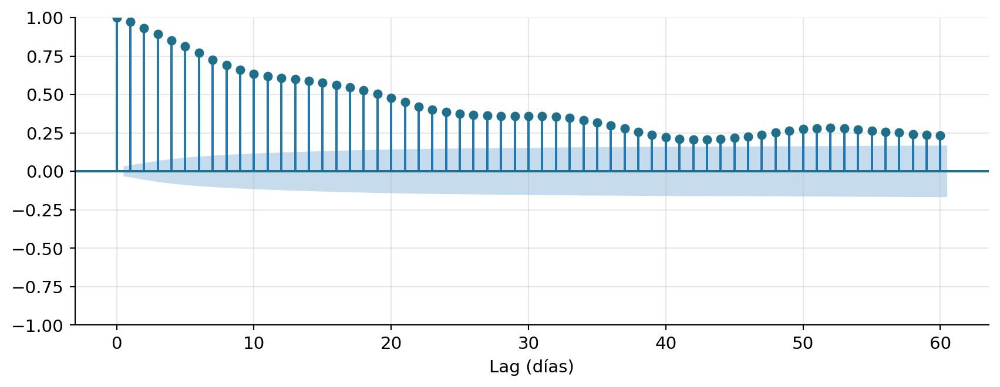
Decae despacio ⇒ memoria larga, persistencia del flujo base.
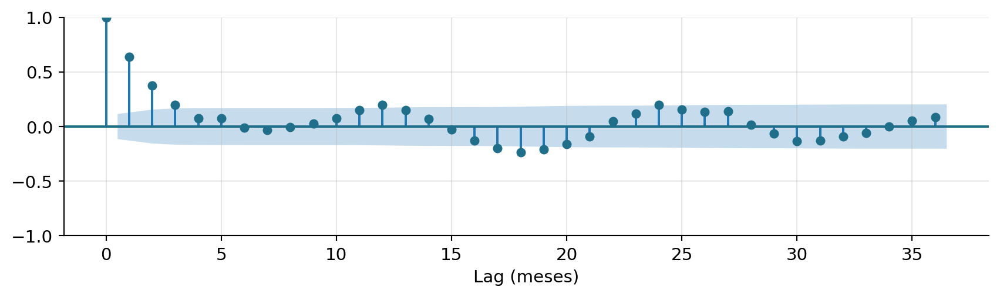
La PACF mide la correlación entre \(y_t\) e \(y_{t-k}\) tras eliminar el efecto de los lags intermedios \(y_{t-1}, ..., y_{t-k+1}\).
Intuición:
Uso clásico (Box-Jenkins): identificar el orden \(p\) de un AR mirando dónde la PACF “cae” dentro de los intervalos de confianza.
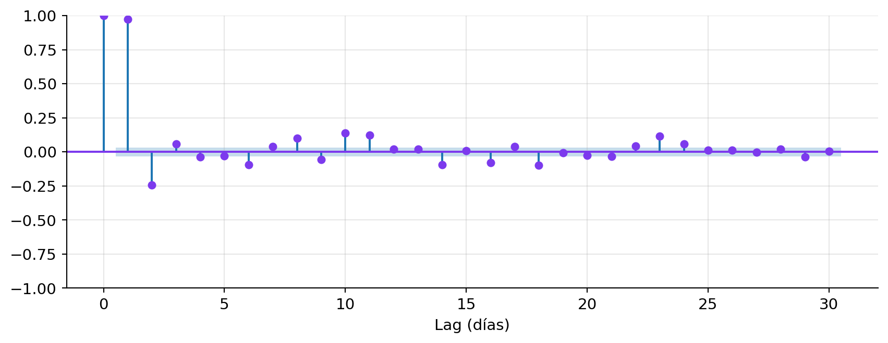
PACF significativa en lags 1-3 ⇒ AR(2) o AR(3) razonable como primer modelo.
La ACF mira un lag a la vez. Ljung-Box (1978) hace un test conjunto sobre los primeros \(h\) lags:
\[ Q_{LB} = T(T+2) \sum_{k=1}^{h} \frac{\hat{\rho}(k)^2}{T - k} \;\sim\; \chi^2_{h} \]
\(H_0\): \(\rho(1) = \ldots = \rho(h) = 0\) (ruido blanco). Rechazar (\(p<0.05\)) ⇒ queda estructura sin capturar.
Se aplica sobre: serie original o residuos (STL, ARIMA).
La CCF mide la correlación entre dos series en distintos lags:
\[ \rho_{xy}(k) = \frac{\mathrm{Cov}(x_t, y_{t+k})}{\sigma_x \sigma_y} \]
En hidrología, el ejemplo canónico:
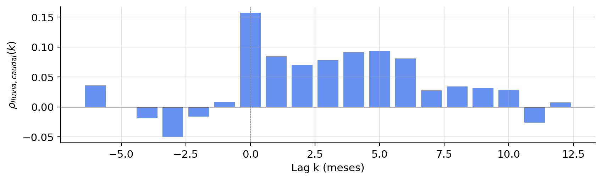
Inspección visual rápida: \(y_t\) frente a \(y_{t-k}\).
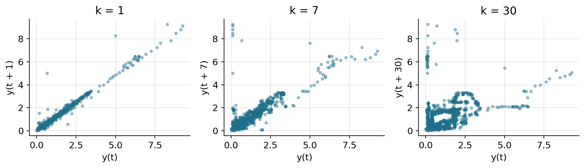
A medida que \(k\) crece, la nube se redondea → correlación más baja.
Box & Jenkins (1970) proponen una receta visual para identificar modelos ARMA:
| Modelo | ACF | PACF |
|---|---|---|
| AR(p) | decae exponencial / sinusoidal | se corta en lag \(p\) |
| MA(q) | se corta en lag \(q\) | decae exponencial |
| ARMA(p,q) | decae | decae |
Lo veremos en detalle mañana, cuando ajustemos ARIMA al caudal del Genil.
Causa física (sensor): valores negativos en caudal o lluvia; “pulsos” aislados imposibles; estancamientos planos durante días.
Evento real (extremo): coincide con lluvia intensa; forma de hidrograma (subida rápida, recesión más lenta); coherente con estaciones próximas.
Regla: nunca borrar sin investigar. Un valor “raro” puede ser exactamente lo que queremos predecir.
| Método | Idea | Ventaja | Cuándo falla |
|---|---|---|---|
| Reglas físicas | rangos válidos del dominio | imprescindible primer filtro | no detecta lo no anticipado |
| IQR (\(1.5 \cdot\)IQR) | rangos cuartílicos | simple, sin asumir normalidad | global → marca eventos reales |
| Z-score robusto | mediana + MAD normalizado | menos sensible a outliers fuertes | sigue siendo global |
| Hampel | z-score robusto en ventana móvil | distingue ruido sensor de eventos | depende mucho de la ventana |
flag y dejar al modelador la decisión.Tres mecanismos clásicos (Rubin, 1976):
Total NaN: 25,393 #gaps: 18 gap mediano: 22 días gap máx: 23284 díasEn Pinos-Genil hay miles de NaN agrupados en gaps largos → no se imputan a ciegas.
| Método | Cuándo | Cuándo NO |
|---|---|---|
| forward-fill | gaps muy cortos en variables lentas (piezometría) | caudal, lluvia |
| interpolación lineal | gaps cortos (1–3 días) en variables suaves | gaps largos, picos |
| interpolación estacional | gaps medios en variables periódicas | regímenes que cambian |
| modelo (Pastas, kNN, regresión) | gaps largos con covariables disponibles | sin info auxiliar |
| dejar NaN | gaps largos sin info, piezometría | si el modelo no los soporta |
Importante: rellenar es introducir información sintética. Documenta siempre qué imputaste y cómo.
resampleCambiar la frecuencia con pandas.DataFrame.resample(...). Regla distinta según variable:
| Variable | Regla de agregación |
|---|---|
| Caudal, nivel piezométrico, temperatura | .mean() |
| Lluvia, evapotranspiración | .sum() |
| Caudal máximo (eventos extremos) | .max() |
| Disponibilidad / días con dato | .count() |
diario: 2,192 obs → mensual: 72 obs
caudal medio mensual: 0.85 m³/s
caudal máx mensual medio: 1.24 m³/sPara que tu análisis sea reproducible y auditable:
sum lluvia, mean caudal).Truco: una columna flag (raw, corregido, imputado) ahorra reuniones.
Siguiente paso: notebooks 01-03 en notebooks/sesion1/.
Dudas y debate
Curso de Series Temporales con Python